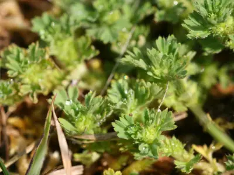

pranet · 出典付きの植物図鑑
الكيميلا ارفينسيس
Alchemilla arvensis (L.) Scop. · Rosaceae

Alchemilla arvensis, known as parsley-piert, is a sprawling, downy plant common all over the British Isles where it grows on arable fields and bare wastelands, particularly in dry sites. The short-stalked leaves have three segments each lobed at the tip. It flowers from April to September. The tiny green flower has four sepals and no petals; stipules form a leaf-like cup, enclosing the flower.
出典: Wikipedia (en): Alchemilla arvensis · CC BY-SA 4.0
異名: Alchemilla aphanes Leers, Alchemilla delicatula Sennen, Alchemilla monandra Stokes, Alchemilla triloba Gilib., Aphanes arvensis L., Aphanes delicatula Sennen, Aphanes monogyna Mazziari, Aphanes triloba Gilib., Aphanes vulgaris Schur, Percepier arvensis (L.) Moench, Potentilla arvensis (L.) Christenh. & Väre
同定や利用は自己責任でお願いします。この図鑑だけを根拠に野生の植物を食べないでください。
出典
- 学名: World Flora Online Plant List 2026-06 · CC0 1.0
- 名前: Wikipedia の記事名と Wikidata · CC0 1.0（Wikidata）。記事名は事実
- 説明: Wikipedia (en): Alchemilla arvensis · CC BY-SA 4.0
- 食用・毒性: World Checklist of Useful Plant Species (Diazgranados et al. 2020, RBG Kew) · CC BY 4.0
- 分布: World Checklist of Vascular Plants (WCVP), RBG Kew, version 2026-06-04 · CC BY 3.0
このページは pranet のデータから自動生成しています。コードは MIT、データは項目ごとのライセンス（説明）。